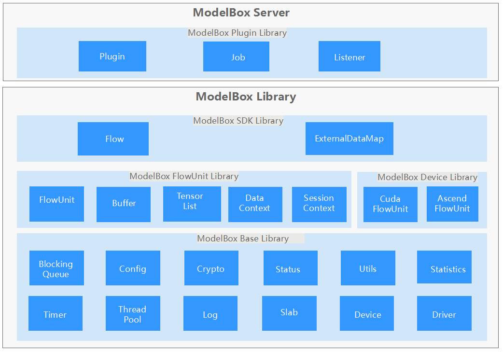

API
ModelBox 针对不同模块的开发提供了C++，Python, Java多种编程语言API，具体API的支持语言如下：
| 模块 | 说明 | C++ | Python | Java |
|---|---|---|---|---|
| ModelBox FlowUnit API | ModelBox功能单元开发API。 | ✔️ | ✔️ | ❌ |
| ModelBox SDK API | ModelBox SDK模式开发集成API。 | ✔️ | ✔️ | ✔️ |
| ModelBox Plugin API | ModelBox插件开发API。 | ✔️ | ❌ | ❌ |
| ModelBox Device API | ModelBox多设备开发API。 | ✔️ | ❌ | ❌ |
| ModelBox Base API | ModelBox基础工具API，如日志、配置等等。 | ✔️ | ✔️(部分支持) | ✔️(部分支持) |
ModelBox各组件整体对外提供的API接口如下：

ModelBox FlowUnit API
ModelBox功能单元开发接口主要用于完成功能单元业务逻辑，相关接口如下：
- Buffer: 数据接口，用于承载AI推理数据。
- FlowUnit: 功能单元接口，用于扩展新的功能单元组件。
- TensorList: Buffer操作接口，支持使用Tensor相关的接口操作Buffer。
- DataContext: 支持功能单元开发的接口，用于获取功能单元的输入，输出，和Stream流上下文的储。
- SessionContext: 会话上下文，用于存储和会话相关的信息。
ModelBox SDK API
ModelBox SDK模式开发接口主要用于完成对流程图SDK启动方式的集成，相关接口如下：
- Flow: 流程图操作接口，用于加载、启动、停止流程图。
- ExternalDataMap: 外部数据与流程图交互接口，用于发送数据到流程图输入和接受处理结果。
ModelBox Plugin API
ModelBox插件开发接口主要用于完成自定义插件的扩展，相关接口如下：
- Plugin: 插件重载接口，用于实现自定义插件。
- Job: 任务管理，可以添加，删除，查询图以及对应的任务。
- Listener: HTTP Server，可以注册HTTP请求的URL事件。
ModelBox Device API
ModelBox多设备开发接口主要完成对不同硬件设备的功能单元，相关接口如下：
- CudaFlowUnit: Cuda类型功能单元接口。
- AscendFlowUnit: Ascend类型功能单元接口。
ModelBox Base API
ModelBox基础工具接口，包含了各种支撑业务运行的常用组件，可以在各个开发阶段使用，包括如下件：
- BlockingQueue，阻塞队列。
- Config，图配置读取。
- Crypto，数据加解密。
- Status，错误返回接口。
- Utils，工具函数。
- Device， 设备抽象接口。
- Timer，定时器组件。
- ThreadPool，线程池组件。
- Log，日志组件。
- Slab，Slab内存缓存组件。
- Driver，ModelBox插件接口。
- Statistics，统计接口，用于统计，获取相关组件的统计信息。
注意：Python仅包含Log, Status, Config组件接口。